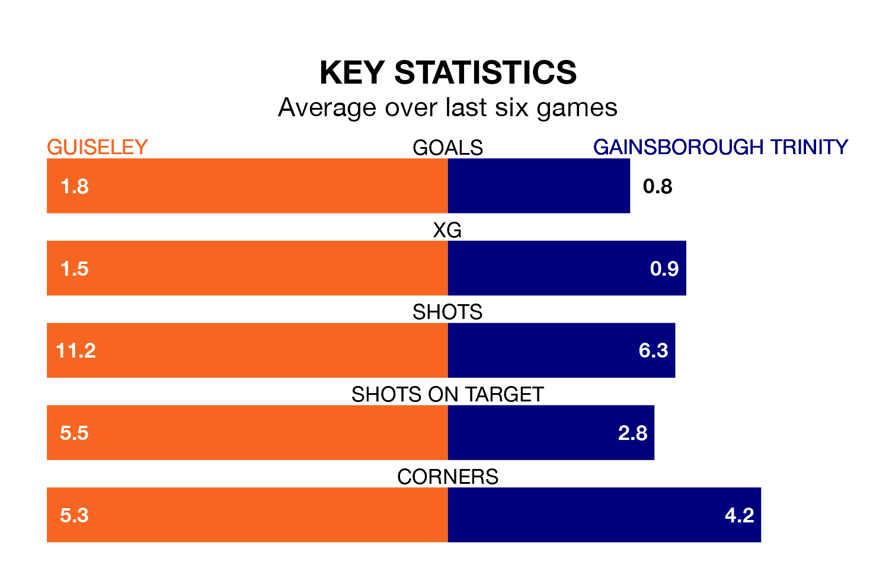

Gainsborough Trinity come to Nethermoor Park to play Guiseley on Saturday in poor form, having collected just three points from their last six games.
The visitors have won just one of their last six fixtures, while the Lions have three wins and a draw.
With 32 goals in 24 games so far this season, Gainsborough Trinity are scoring at below the league average rate with 1.3 goals per game. And they are conceding more than average, letting in 47 goals at a rate of 2.0 per game.
Guiseley, meanwhile, are above average scorers, with 1.9 goals per game, compared to a league average of 1.7. They have conceded 1.6 goals per game.
The Blues are 17th in the table after 24 games, of which they have won seven and drawn five, earning 26 points.
The Lions are nine places ahead of the visitors in eighth, with 11 wins and six draws putting them on 39 points.
In the last five years, Guiseley and Gainsborough Trinity have played each other on four occasions. Guiseley won one of them, Gainsborough Trinity two, and they drew once.
On average, the Lions scored 1.0 goal and the Blues 1.8 in those matches.
Their last meeting was on October 7, when Guiseley won 3-1 away.
Guiseley's last match was on Monday, a 1-0 win against Bradford Park Avenue.
Gainsborough Trinity beat Worksop Town 2-0 last time out, also on Monday.
Updated: 10:36, 03/01/24